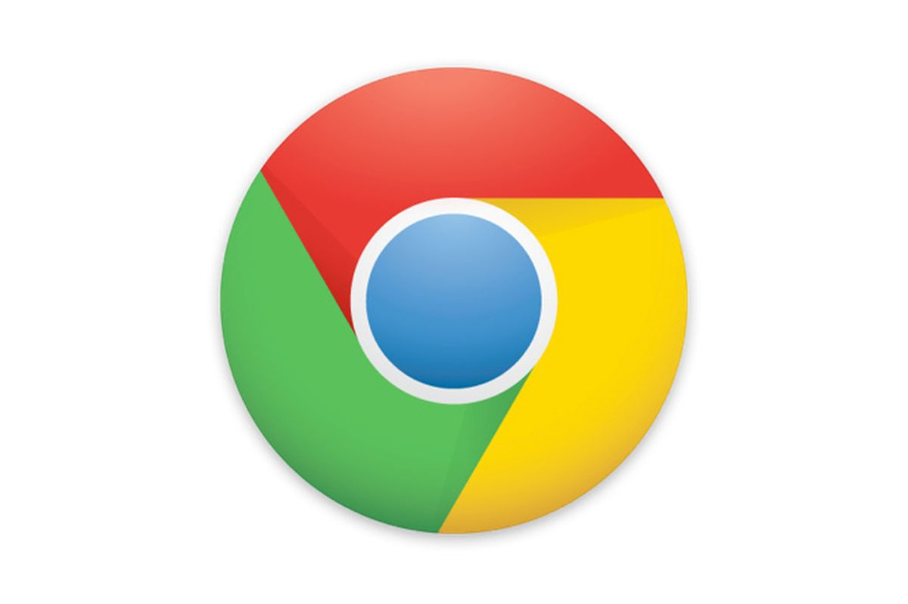

Currently, I am using Google Chrome. It is fast, I can access my bookmarks from any computer, it is well integrated with Google services such as Gmail and Gdrive/GDocs. I believe that from all the web browsers available today, Chrome is the best choice.
<However, it was not always like that. Before Chrome, I was using Mozilla Firefox. It was fast too, had bookmarks - in times of old Internet Explorer - who remembers that? Dizozaurs? - the possibility of having opened more than one website at a time was a great progress. Also, I sometimes still miss the graphical skins to Firefox. It is something that Google Chrome does not have, which is kind of a shame, actually.